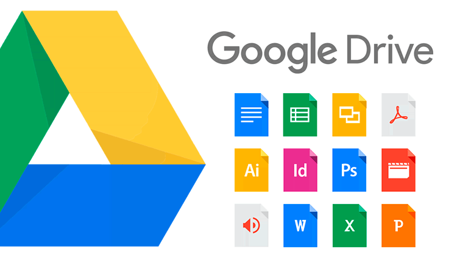
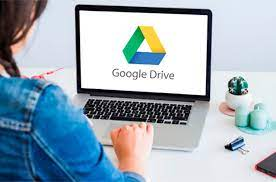
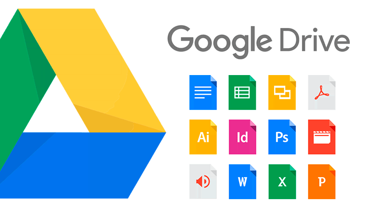
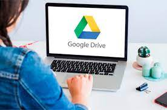

Google Drive
¿Qué es?
Google Drive es un servicio de almacenamiento de datos que son guardados en la nube (plataforma en línea a la que se accede desde cualquier dispositivo con conexión a Internet).
Leer mas
Google Drive es un servicio de almacenamiento de datos que son guardados en la nube (plataforma en línea a la que se accede desde cualquier dispositivo con conexión a Internet).
Leer masCuando Google Drive se lanzó por primera vez, cambió un poco las reglas del juego. Permitía a los usuarios almacenar archivos en la nube y acceder a ellos desde cualquier lugar ...
Leer mas 



Puedes trabajar con tus archivos office, es decir, por medio de esta función las empresas pueden editar, descargar, y archivar documentos de Office en Google Docs, hojas de cálculo, diapositivas y exportarlo en un archivo Office.
Leer mas